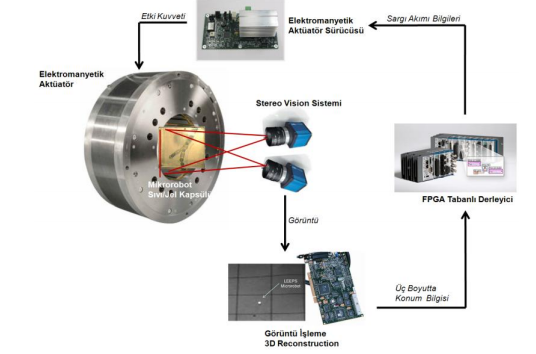

| 6 Serbestlik Dereceli Mikrorobot için Temassız Elektromanyetik Aktüatör Sisteminin Tasarımı Ve Üretimi |
| TÜBITAK PROJESI, Araştırmacı, 2012-2015 |
| Proje Ekibi:Aysun Baltacı, Levent Çetin,Mutlu Boztepe, Mehmet Sarıkanat, Ömer Mermer, Barış Oğuz Gürses |
Manyetik mikrorobotlar, elektromanyetik alan içerisinde kontrollü olarak yer değiştirebilen ve konumlandırılabilen cihazlardır.
Hareket enerjilerini temassız olarak kontrollü manyetik alan sağlayan elektromanyetik aktüatörden(EMA) alırlar. EMA‟nın sargı
akımları ayarlanarak, mikrorobotun hareketini sağlayan etki kuvveti ve mikrorobotun hareket yörüngesi kontrol edilir. Manyetik
mikrorobotların konumlaması temassız olarak uzaktan sağlandığından hareket için gereken güç ünitesi ve aktüatörler üzerinde
yoktur. Bu sayede mikrorobotun boyutu küçülebilmekte ve özel amaçlar için aktüatörlere yer açılabilmektedir. Bu sebeplerden
dolayı hassas ortamlarda (insan damarları, beyin, göz vb.) kullanımları uygundur.
Gelecek yıllarda sıvı ve dokular içerisinde hareket eden manyetik mikrorobotların tıpta ve bilimde canlı içerisinde belirli bir
noktaya ilaç iletme, örnek alma, yüzey parçalama gibi bir çok kullanım alanı olacağı öngörülmektedir. Bu sebeple son on yıl
içerisinde bu konuda araştırmalar artmıştır.
Bu çalışmada, mikrorobot ve mikrorobotu üç boyutlu uzayda hareket ettirecek elektromanyetik aktüatör ve denetleyici sistemi
parametrik olarak bilgisayar ortamında tasarlanacak ve üretilecek, görüntü tabanlı geri besleme yöntemleri ile manyetik
mikrorobotun sıvı ve hidrojel içerisinde belirli yörüngelerde kapalı çevrim kontrollü hareketi sağlanacaktır (Şekil-1).

Şekil 1- Mikrorobot ve Elektromanyetik Konumlandırıcı Sistemi
Elektromanyetik aktüatör, bilgisayar destekli tasarım ve analiz programları kullanılarak, çoklu fizik ortamında bir bütün olarak
incelenip tasarlanacaktır. Sistemin geometrik tasarımı ve imalat resimleri Autodesk Inventor yazılımı ile, akış – mukavemet –
elektromanyetik gibi fiziksel analizleri COMSOL yazılımı ile, denetleyici tasarımı ise MATLAB yazılımı yardımı ile yapılacaktır.
Sistemin konum kontrolünde doğrusal olmayan model öngörümlü denetleç (nonlinear model predictive controller) kullanacaktır.
Sistemde mikrorobota ilişkin geribesleme sinyali olarak görüntü işleme sisteminden gelen konum ve oryantasyon bilgileri
kullanılacaktır.
Magnetic microrobots are devices whose motions can be controlled in electromagnetic field. They take their energy from
electromagnetic actuators(EMAs) which induce controlled magnetic field without any contact. By adjusting the coil currents of
EMAs, action force that provide movement of microrobot and the motion of trajectory can be controlled. Power supply and
actuators that needed for the energy of motion are not on body of microrobot because positioning of microrobots are done
contactlessly. Thus size of microrobots can be very small and there can be enough space for special purposed actuators. For
these reasons, applications in sensitive enviorements(human veins, brain, eye etc.).
It is forseen that many applications of magnetic microrobots that moves in liquids and tissues will find application ares like
sample gathering, drug delivery in body, surface fragmentation in medice and science in the next years. That‟s way there are
many studies in the last 10 years.
In this study, microrobot and electromagnetic actuator – controller system that moves microrobot in 3D space will be designed
and manufactured parametrically in computer, motion of microrobot will be controlled in liquid and hydrogel on a defined
tracjectory with feedback methods based on image processing (Figure 1).
Figure 1- Microrobot and Electromagnetic Positioning System
Electromagnetic actuator will be designed in multiphysics environment as a whole with computer aided design and analysis
tools. Geometric design and technical drawings will be done in Autodesk Inventor, and physical analysis like flow – structural –
electromagnetic will be performed in COMSOL and controller will be designed by MATLAB. Nonlinear model predictive
controller will be used in the position control of system. Position and orientation data which will be provided from image
processing system will be used as a feedback signal in the system.